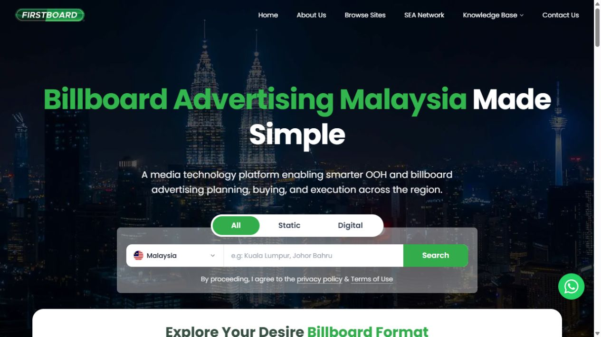
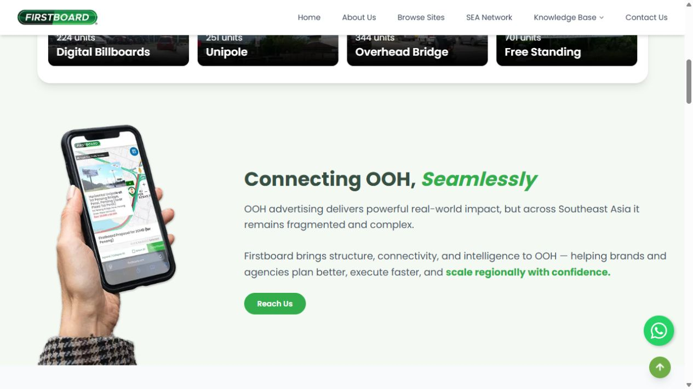
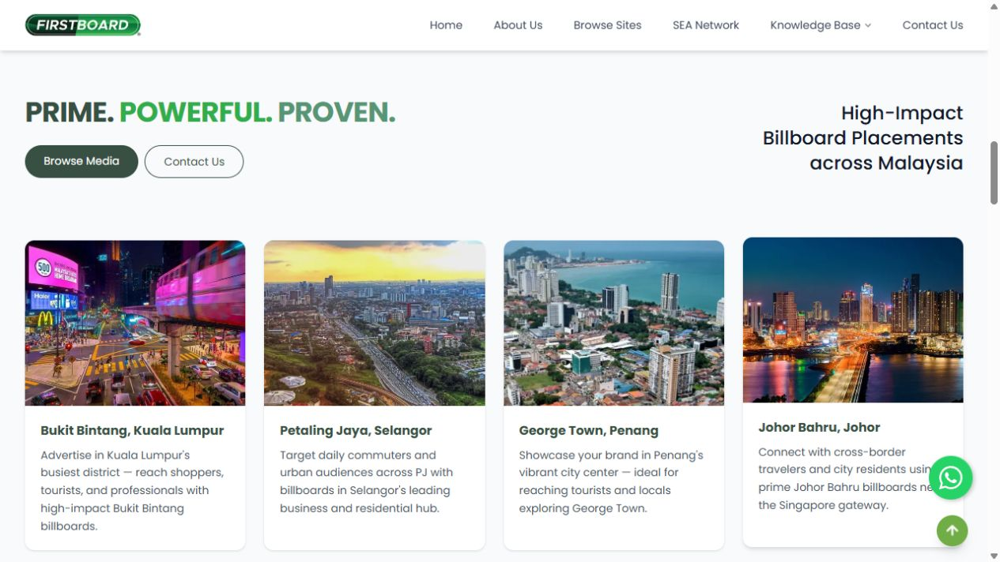
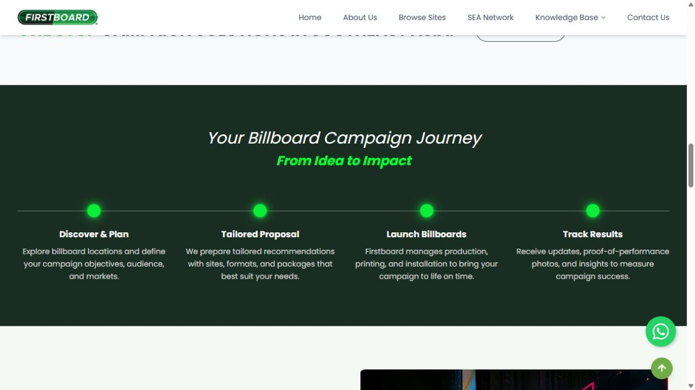
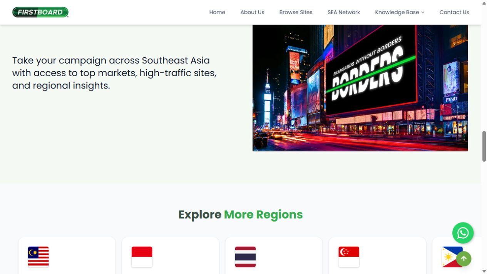

Information architecture
Organized campaign education, search paths, regions, blog content, FAQ, and contact flows into a scannable journey.
Website + CMS + OOH Platform
A complete public website experience for billboard advertising in Malaysia, designed to make outdoor media discovery, campaign education, regional navigation, and lead conversion feel clear.

Xin Mei's design and build skill set.
Overview
The website introduces Firstboard as a media technology platform and gives visitors a clear path from discovery to action: search by location, explore billboard formats, understand the campaign process, compare regions, read education content, and contact the team.
The design work balances a bold OOH advertising brand with practical UX patterns: strong page hierarchy, obvious calls to action, reusable content sections, and CMS-friendly structures for campaign and knowledge-base updates.
Website scenes
Selected screens from the website, arranged with contrast in size while keeping consistent gaps and radius.




Organized campaign education, search paths, regions, blog content, FAQ, and contact flows into a scannable journey.
Balanced bold billboard energy with a clean website structure, strong CTAs, and repeatable page sections.
Structured sections so the site can keep growing with market pages, media categories, articles, and campaign updates.